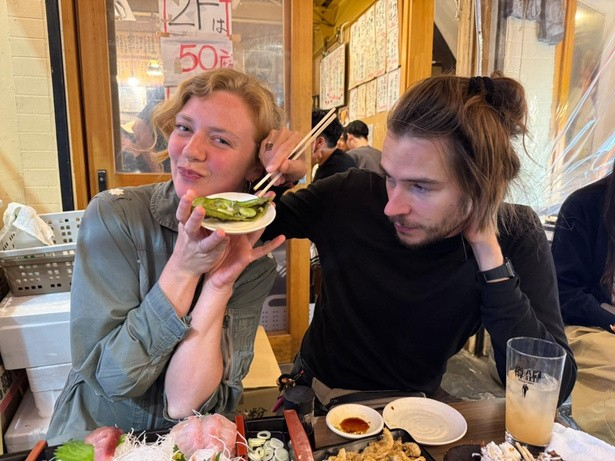
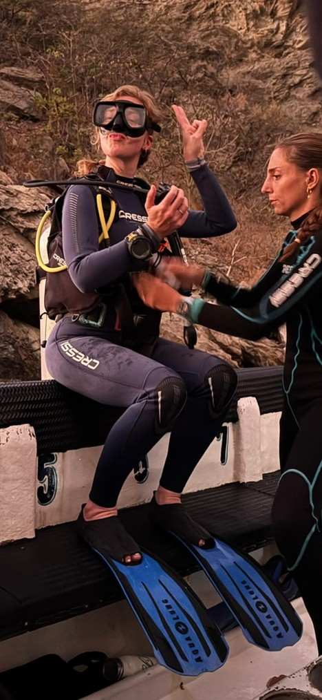
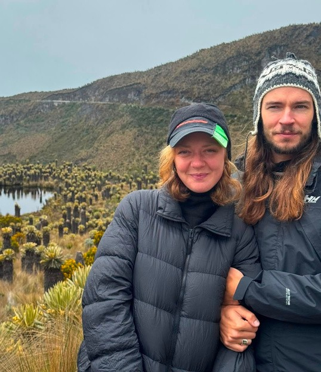
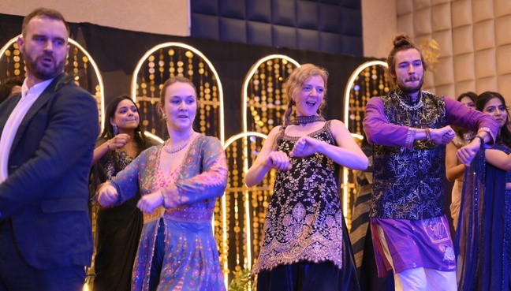
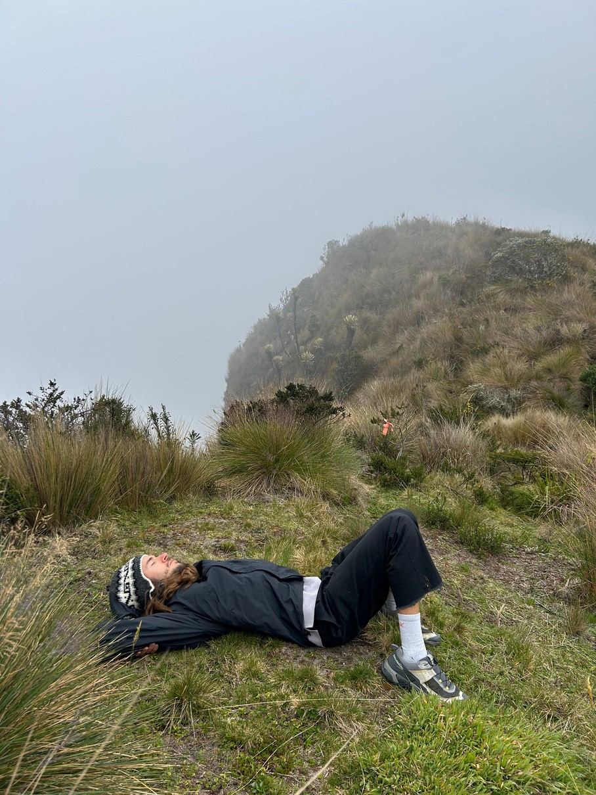
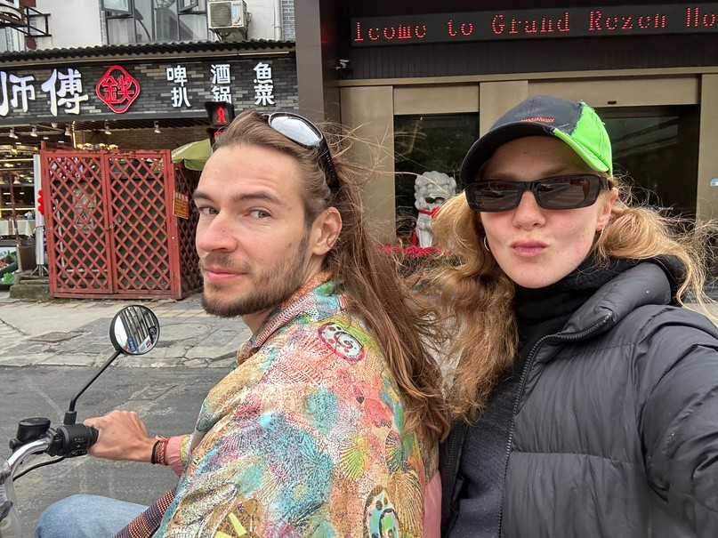

MOOWS / Issue 01 · August 2026
How to stay alive
A practical guide to not dying whilst circumnavigating the planet, by Dixie and Oleg.

As some readers may know, on December ‘25 we packed our bags, gave up the places we called home and embarked on an adventure. Our rough plan was to head east until we eventually completed a full circle and found ourselves back in London.
As you can imagine, it has been a lot: a lot of emotions, a lot of impressions, a lot of conversations, a lot of portals into a lot of different worlds, but one phrase that came up consistently was ‘Wow, it’s exciting to be alive’ which often (once the adrenaline dipped) was followed by ‘Wow, being alive is tiring’. Our big stops were Sri Lanka, India, Japan and Colombia. It took us 7.5 months, but we have made a loop around the planet, we are back with stories, and we are still alive. Now that we are officially experts on aliveness, and as the surrealism of reverse jetlag has subsided, we are here to share our discoveries on how to remain in that state…until you die.
BREATHE
O: Be it deep under water, or high up in the mountains - stay relaxed and breathe deep and slow. As a true explorer, I investigated the consequences of not following this advice, enjoying the experience of not being able to breathe while having a panic attack scuba diving (my first 10m training dive!) and altitude sickness on 4,200m after running around too excitedly. Both times, slowing down and reverting to a deep, slow breath restored the balance of the needed/available oxygen and symptoms disappeared. Exciting!
There was a true sense of aliveness up there in the mountains: páramo landscape, a tropical tundra covering the mountains with grass and mosses and frailejones spreading in all directions. Emptiness and quietness, which are hard to find elsewhere in Colombia - be it cities or jungles. We walked out into páramo, covered in clouds, lay down in the moss and fell asleep. You can only sleep if you’re alive.

EAT
O: Obviously, food is one of the key daily elements for staying alive long term, but it is not that easy. It costs money, might contradict your values, aesthetics, or desires and it might not give you pleasure. Our learning is simple: it all doesn’t matter. You have to eat.
In a remote Japanese villages even the tofu dishes have shrimps hidden inside, sweet steamed dessert buns are stuffed with pork, and fish flakes are sprinkled on top of everything. In a far flung Izakaya in Kyushu when a giggly drunk group have a bowl of pork tripe delivered to your table (part cultural education, part prank)…and Oleg only just managed not to be sick (we passed the test and were invited to drink with them!). When we craved a meal that wasn’t a curry somewhere in Sri Lanka and succumbed to a pizzeria. When every single day in Colombia we had at least one plantain on our plates.
You have to eat what you have to eat.
TAKE CHANCES
D: Layovers have quietly created highlights in the last 7 months. Not the destinations we'd planned, but the liminal ones in between, the interludes. The places we hadn’t chosen, yet somehow remember most vividly.
First, while on our way to Sri Lanka, we found ourselves pausing in Dubai, racing across the desert in an obnoxious supercar to stargaze, next I was fashioning a headscarf from a sarong to step inside the Sheikh Zayed Grand Mosque.
I'd never felt the pull to visit the UAE, but that accidental detour felt like a small kind of magic. After that, extended layovers became a tradition.
They slightly softened the mileage guilt, but more than that they dissolved preconceptions and rewrote narratives I didn’t even realise my subconscious had written. They've taken us raving to hyperpop in Guangzhou, China, fed us exquisite temple food on Lantau Island off Hong Kong, gifted us a night in a drive-in love motel in Taiwan, and delivered us to a spiritualist stoner named Bill’s living room in Orlando, who sat us down on our last night of travel to explain Trump’s genius.
None of it was on the itinerary, none of it was in the script, and none of it would have happened if we'd taken the direct flight, but there’s something deeply life-affirming about surrendering to chance.


BE NAKED AND BATHE
D&O: To prepare for future dangers and elevate the spirit, one must attend to the body - a practice every culture approaches differently. In Japan, the answer is simple: bathe.
We’ve taken this advice very seriously and estimate that between the two of us, we have visited around 40 onsens (bathing houses) over 2 months in Japan. Some were vast and fancy, others tiny, old, and weathered. Some austere and utilitarian, others magical and otherworldly. One was entirely wild - just a warm muddy pool in a creek, another mixed gender and entirely open - a river in the middle of a small town. One created specially for monkeys to divert them from crashing the human one when they were seeking warmth from the snowy winter.
Some are clustered in villages where you can spend an entire weekend hopping from one to another, clicking about the cobbled streets in your robes and geta; others are hidden, remote, secluded and reachable only by car or hours of hiking.
Two months in a country where communication is (mainly) impossible without the help of an app, politeness and social etiquette are a priority, felt isolating at times. Onsens provided a cure - a tonic for the distance. Shedding our clothes, our costumes, squatting on little plastic stools to scrub ourselves, and then submerging in the heat of the water and the haze of the steam, felt reassuringly primal.
REMEMBER YOU’RE DYING
D: Varanasi, the sacred Hindu city, is the physical embodiment of the phrase Memento Mori - a living and breathing reminder that we must die. It is the city of death, but nowhere else on this planet has made me feel more alive. Whether or not you believe that a city has the power to erase a lifetime of negative karma and liberate your soul from Samsara, experiencing a place that has celebrated, exhibited, and welcomed death for over 3000 years is an experience, I believe, we could all do with. Children playing along the ghats, people chatting and laughing with one another, even taking selfies, whilst men dressed in white, with freshly shaven heads tend to bonfires from which their late family member’s limbs protrude. It’s a scene that seems impossible to those of us that grew up in cultures that only briefly look death in the eyes, before sweeping it under the carpet, and it’s a scene that I can’t erase from my memory even if I wanted to.
DO NOTHING
O: Along the way, we discovered that the absence of action can be enlivening too. . Dixie sat a Vipassana in Pushkar - an experience that transformed her relationship with time (extending her life, she claims!) and brought a new important friendship - from simply sitting next to someone else for 10 days in silence.
For Oleg a similar experience was a rocky beach in southern Japan, where as part of the experimental dance retreat they were exploring resting - spending hours with the stones and the sea, doing nothing, becoming stones, becoming sea, exploring different forms of existence.

AND FINALLY….HOPE (FOR THE BEST)
Lastly, there is also a need to balance aliveness as a mental state. Aliveness as in ‘not being physically dead’.
Something that we feel is represented by a formula ‘keep calm and hope for the best’. There’s been a lot -from navigating crazy traffic on scooters (beware of the buses!), to standing on a sightseeing platform in front of the erupting volcano, being lost in a jungle in the night with no head torches, to kayaking in a creek with alligators and more! We did it. It was fine. (Just ensure you don’t actually die)
